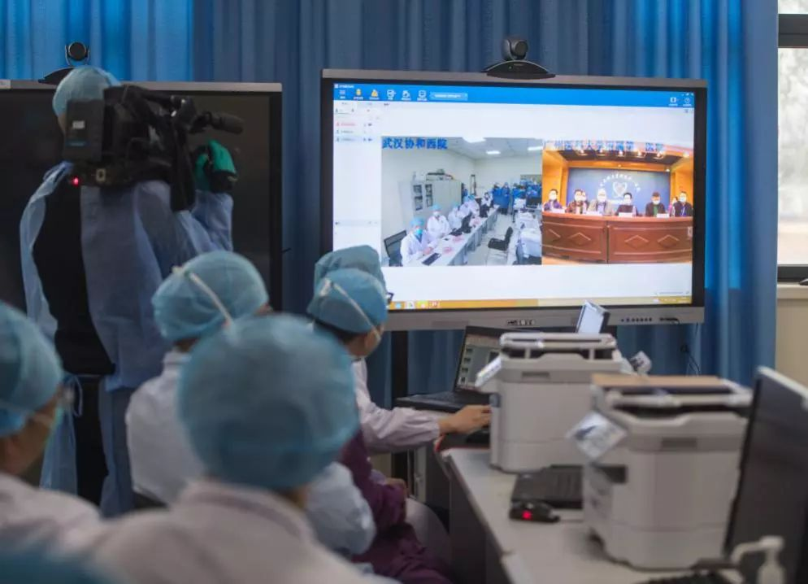
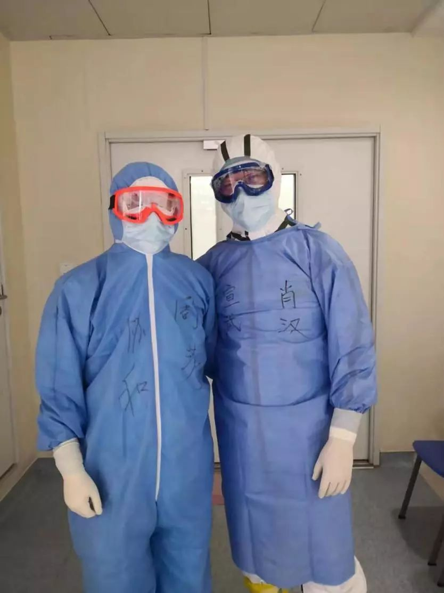

援助武汉周边地区的志愿者们
原文链接 备份链接 医院人员领取志愿者送的医疗物资。受访者供图 文 | 李晓芳 编辑 | 胡大旗 新型冠状病毒肺炎疫情扩大后，湖北省内的医院医疗物资告急。从1月23日开始，很多医院自行发布物资募捐公告。几乎同一时间，各种民间力量行动起来， …

*************▲************* 2020年1月28日，武汉协和医院感染科病房。 （新华社/图）
全文共5066字，阅读大约需要7分钟。
从那时起，护士们戴的不再是常规的护士帽，换成了另一种蓝色帽子，需要把头发全部包起来。
李雯记得，医院的N95口罩在她实习结束前已经不够了，1月19日，她所在的科室去领取物资时，只领到了10个N95口罩。
何烁解释，他们和每家医院的每个科室都是直接联系，光捐往协和医院的物资就有20个不同的科室、不同的收件人。
本文首发于南方周末 未经授权 不得转载
文 | 南方周末记者 张笛扬
南方周末特约撰稿 郑伊灵
责任编辑 | 吴筱羽
2020年1月19日，华中科技大学同济医学院学生李雯收到学校通知，要求所有实习生提前放假回家。
李雯当时在华中科技大学同济医学院附属协和医院（以下简称“协和医院”）实习，岗位是护士。此前两天，她刚刚从呼吸内科被调走，同样被调换到其他科室的，还有呼吸内科所有实习生。
没人被告知调整的缘由。直到第二天晚上，李雯看到了钟南山在央视连线中说，新型冠状病毒肺炎呈现“人传人”的特点，方才恍然大悟。
但她当时还不知道，钟南山为此援引的病例——14名医务人员在护理一名患者时被感染，就发生在她的实习单位，协和医院。
他们是此次疫情中最早为人所知的医护人员感染病例，由此成为疫情防控在1月20日发生转折的标志。
医护人员感染在此次疫情中情况严重。2月14日下午，国家卫健委副主任曾益新在国务院新闻发布会上介绍，截至2月11日24时，全国共报告医务人员确诊病例1716例，其中6人不幸死亡。其中武汉市报告了1102例医务人员确诊病例。
而根据《美国医学会杂志》（JAMA）发表的中南医院重症医学科主任彭志勇团队的文章，截至1月28日该院的138例病人中有57例为院内感染，其中40例为医护人员。
2月3日流出的一张武汉市医务人员确诊感染病例上报图表中，协和医院的病例超过百例，排名第一。
这14名医务人员相对幸运，至2月5日，他们分三批治愈出院。从病房乘坐直达电梯下楼，他们打出胜利的手势。
即便已经知道疫情，在按要求提前放假回家时，李雯怎么也预料不到，协和医院不久后会因为医护感染、物资告急等问题，受到全国关注。
1
在钟南山央视连线之前，没有医生、老师明确告诉实习生疫情的严重性，但回忆起来，从医院的种种细节上，李雯还是感觉到了“不对劲”。
1月中旬开始，呼吸内科的护士老师反复向她强调要做好防护，口罩不能摘。她注意到，从那时起，护士们戴的不再是常规的护士帽，换成了另一种蓝色帽子，需要把头发全部包起来。
李雯在连线时对南方周末记者回忆，她实习时，呼吸内科有3名发热病人住在隔壁病房，医生护士进入那几间病房都会穿上防护服，还要求实习生不能进入隔离病房。“每次看到老师们穿上防护服，实习生们都会十分紧张。”
钟南山央视连线的第二天，武汉市长周先旺在接受央视记者采访时表示，协和医院神经外科的一位病人在做完手术后出现了发热症状，14名医护人员被感染。周先旺说，“这个教训很深刻，与我们对这个病毒的危害和传播的认识，从一开始没有达到这么高的等级有关。”
“因为我们的感染，钟南山院士调研时就确认了‘病毒可以出现人传人’这一说法，可以说我们的确诊刷新了公众对该病毒的认知。”其中一名染病护士在社交平台上发文称。
另一名染病的护士则是在1月12日的夜班护理了一名高度疑似病人后，1月13日凌晨六点就出现乏力、肌肉酸痛症状，寒战发冷不适，到下午两点测体温38.3摄氏度，于是开始抽血、查CT，各种指标都是高度疑似的表现。这位护士称，她在护理疑似病人时已经戴了N95口罩，但没穿防护服。
防护装备至关重要，但在疫情早期，几乎所有医院都未给予足够重视。近日停靠日本横滨港隔离检疫的钻石公主号邮轮，确诊1名检疫官感染，该检疫官此前在船内开展乘客问卷回收工作，其间戴口罩手套并频繁手部消毒，但也未穿戴防护服和护目镜。
前述被感染护士称，直到将近一周后，1月19日，医院有试剂盒可以做核酸检测了，结果显示为阳性。她怀着各种忐忑的心情进入隔离区后，发现一起过来的有十几个同事，大家都是第一批确诊的医护人员，“也算不孤单了”。
第一批确诊的医护人员中有一名郑姓神经外科医生。武汉协和医院公众号发布的文章中，他感慨，“作为一个病人的心态来说，当时真的有些害怕，不愿承认。”但作为一名医生，他很清楚地意识到自己可能“中招”了，开始远离家人进行自我隔离。
同批确诊的还有协和医院急诊科主任张劲农。他经历过SARS、经验丰富，是协和医院2019年12月31日成立的应对疫情专家组副组长，主要负责制定疫情的临床救治方案和优化治疗流程。
他确诊后选择在家隔离治疗，隔离期间仍阅片、讨论病例、指导会诊工作，还起草了《武汉协和医院处置2019新型冠状病毒感染策略及说明》，该方案日后在网络上被广泛传播。
随着疫情发展，后来再有协和医护人员染病，但更准确的统计数字目前难以获得。一位协和医生在接受《中国新闻周刊》采访时称，他们当时唯一能做的就是一再嘱咐就诊患者：“口罩、口罩、一定要买口罩、戴口罩。”

2020年2月11日，广东医疗队武汉前方ICU团队在武汉协和医院西院与后方广州医科大学附属第一医院举行远程视频会诊。（新华社/图）
2
李雯当初是抱着仰慕来实习的。“协和非常厉害，是国内的顶尖医院，医生老师们都很专业，要是毕业后能去那里工作就很好了。”
“协和”是中国医疗界的“金字招牌”。武汉协和医院在官网中自称，该院为目前国内三大协和医疗品牌中规模最大。该院于1866年由英国传教士杨格非创建，定名为汉口仁济医院，1928年更名为汉口协和医院。2000年，随其所属的同济医科大学并入新组建的华中科技大学。
协和也是武汉其中一家最大的医院。就主要医疗指标而言，该院是中国顶级的综合医院：年门急诊量602.8万人次，住院量25.5万人次，手术量逾12万台次。在复旦大学医院管理研究所发布的2018年度中国医院排行榜中，武汉协和医院名列全国第12位。
令李雯印象较深的是，医护人员对病人的态度特别好，“老师们不管再怎么累，都带着笑容跟病人讲话。”这扭转了她对医生的刻板印象。让李雯受触动的还有职业感，“护士们总是对患者的名字、床位和药品核对一遍又一遍”。
疫情将这间顶级医院带入了前所未有的紧张状态。
该院是武汉六十多家设有发热门诊的医院之一，而该院西院区，被武汉市定为第三批收治发热病人的定点医院之一，成为防疫治疗的一线“战场”。
在组建专家组的2019年12月31日，协和决定建呼吸道传染病隔离病区。
协和医院距离被认为疫情主要起源地的华南海鲜市场不到4公里。据财新报道，随着疫情暴发，来到医院发热门诊的病人最多时一天可达八九百人。但这里过去没有呼吸道传染病病房。
感染科大楼一楼整层改成了呼吸道传染病病房。很快便填满了，接下来，二层、三层、四层也变成了呼吸道感染病房。原有的近三十名医生不够用了，医院动员了全院内科资源，尤其是呼吸科和急诊科的内科医生来轮班。
原本门上挂着“专家门诊”的诊室，全部被用作发热门诊就诊室。体检中心大厅，也成了发热门诊输液大厅。
在发热门诊工作的医生李伟在接受采访时透露，每天从排2个医生到排4个医生，再排到8个医生，三班倒看病，24小时接诊，差不多每天400个号。
为防止病人交叉感染、造成更大范围蔓延，协和医院后来关闭了发热门诊，派出专家医护团队进驻定点医院开展诊疗，发热门诊及隔离病房的医疗措施和相应病人全部转移。
儿科医生林鸣被抽调到了成人发热门诊，他在“微头条”上分享：为了节约防护服，他早餐时会多吃一点，坚持到下班后脱掉防护服后再吃饭。
“活了三十多年”，林鸣还第一次穿上了纸尿裤，不过他很快发现，工作时无法分心，尿不出来，便没再穿了。
也会有“丧”的时候。2月1日晚，林鸣接到发热门诊主任的电话，“有两个兄弟发烧倒下了”，之后他的夜班得调整为从晚八点到早八点，“我跟主任在电话里都沉默了，最后他说了句‘保重’就挂断电话了。”

2020年2月8日，首都医科大学宣武医院呼吸内科副主任肖汉（右）在武汉协和医院与同事在一起。（新华社/图）
3
13公里外，被定为第三批新冠肺炎定点医院的协和西院，已在一月底将住院楼改造为专治住院楼，有来自北京、陕西、黑龙江等地的医疗队来此驰援。
北京朝阳医院急诊科副主任唐子人是前来驰援的北京医疗队成员，他也是朝阳医院医疗分队队长。
唐子人的名字是因为写在防护服上，而为人所知的。
外地赶来的医疗队员本就不太熟悉，穿上防护服后就更难相认了，于是，每个人在防护服上写上了自己的医院和姓名，大大的字。
1月30日，唐子人在微博上发了一张自己全身穿戴防护用品的照片，写道，“虽然每进入一次病房，将近十个小时不能吃喝，但比起武汉人民正在经历的磨难，这点苦真算不了什么。”
不少网友发现，唐子人的裤腿上疑似绑上了黄色的医疗垃圾袋，上面还印有字。同日，身份认证为协和医院神经外科医生的用户发布微博表示，医院物资“不是告急，是没有了”，引发了公众对该院物资情况的关注。
1月31日，有网友发布照片表示，由于物资紧缺，协和医院西院一线医护人员以黄色垃圾袋等材料自制防护服和口罩。对此，武汉协和医院后来辟谣称图文均不属实。
唐子人也否认了自制防护服一事。他在连线时对南方周末记者表示，“无论是口罩还是防护服，物资目前来讲还是比较充足的，至少上一线的人肯定是能保障的。”唐子人说，救治工作已经走上正轨，正有条不紊地开展。
武汉协和医院的确是此轮疫情中最早发出接受社会捐赠公告的医院。2020年1月23日，该院就对外发布了接受爱心捐赠的公告，表示急需护目镜、N95口罩、外科口罩、防护服等用品。
这确是实情。李雯记得，医院的N95口罩在她实习结束前已经不够了，1月19日，她所在的科室去领取物资时，只领到了10个N95口罩，主班护士让大家省着用。
协和医院公众号发布的一篇推文也透露出物资短缺的现状，1月23日，该院耳鼻咽喉科三位医生完成了向武汉市红十字会医院转运感染患者的任务，转运过程中，由于物资短缺，其中一位医生没有防护面罩，只好用游泳眼镜替代。
协和医院党委副书记孙晖在接受央视采访时回答称，“物资紧张，但没到‘弹尽粮绝’的地步”。孙晖举例称，作为分管发热门诊的党委副书记，他之前每天都要到发热门诊去转一转， 物资紧张之后就没再去过，因为要把防护服省下来给一线使用。
一线之外，其他科室也可能遇到发热和肺炎病人，但他们的供应就非常紧张。协和外科医生张毅告诉南方周末记者，“口罩和防护服还是不太够，只能限量供应”，他所在的科室每天给值班医生发两个N95口罩，不值班的医生每天发一个。
协和的物资状况连续引发强烈关注之后，来自各地的民间捐赠物资涌入该院。
1月30日，由华科德国校友会捐赠的首批物资被直接运抵协和医院。华科德国校友会秘书长何烁告诉南方周末记者，一看到武汉协和医院和同济医院物资紧缺，他们就行动起来，从德国采购物资运回国内。两家医院均为华中科技大学的附属医院。
除了向母校两家医院捐赠外，华科德国校友会筹措的物资共发往了湖北省16个城市共计64家医院。何烁解释，他们和每家医院的每个科室都是直接联系，光捐往协和医院的物资就有20个不同的科室、不同的收件人。
截至2月2日，来自全国9省份的40家单位定向捐赠物资，都直接运往了协和医院。2月1日下午，一架直升机空降武汉新华路体育场，机上有800套定向捐赠给协和医院的防护服。
张毅告诉南方周末记者，随着大量捐赠物资涌入，医院的物资短缺情况已有所好转，张毅所在的科室护目镜数量有限，之前是几个医生轮流使用，现在给每个人都配发了一个，每次用完后，用酒精消毒再接着用。
但张毅也证实，很多捐赠物资都不是医用防护用品，医院收到了不少用于防尘、防霾的口罩。但医用口罩又确实不够，张毅和同事们想了折中的方法，将工业N95口罩和医用外科口罩摞起来戴着用。
“现在大多数医生护士还挺乐观，虽然隔着口罩，但见了面还能有说有笑。”张毅说。李雯也注意到，协和医护的微信朋友圈里，没人抱怨，倒是不少人发“武汉加油”，给自己鼓劲。
然而，紧张的气氛不时在医院大楼里浮现。张毅的一名同事几天前开始有发热症状，护士在高压下情绪激动、流泪的情景，也越来越多。
（张毅、李雯为化名）

征集

《南方周末》现向所有身处新冠肺炎一线的读者公开征集新闻线索。我们欢迎武汉及周边城市医患联系记者，提供防疫前线的一手资讯，讲述您的新春疫情见闻。若您不在武汉，但您身处之所也有与疫情相关的重要新闻线索，亦欢迎您与我们分享。疫情仍在蔓延，南方周末将执笔记录每位国人在疫情面前的希望与困境，与广大读者共同面对疫情。祝愿所有读者朋友们，新春平安。线索可直接给本篇文章留言，格式为：【线索】+内容+您的电话（绝对会对您的个人信息保密）
戳击下面图片 继续阅读专题


原文链接 备份链接 医院人员领取志愿者送的医疗物资。受访者供图 文 | 李晓芳 编辑 | 胡大旗 新型冠状病毒肺炎疫情扩大后，湖北省内的医院医疗物资告急。从1月23日开始，很多医院自行发布物资募捐公告。几乎同一时间，各种民间力量行动起来， …
原文链接 备份链接 新型冠状病毒疫情像是一场突如其来的阴霾，在这个冬天笼罩了华中大地。相较于最受关注的武汉市民，周边城市的人们，像是处在阴霾边缘，遭受侵袭，却又不常被看见。面对重重困难，孝感、黄冈、黄石、信阳、荆州、天门……各个城市的百姓 …
原文链接 备份链接 同力协契 共克时艰 武汉“封城”已三周，新冠肺炎全国感染人数还在持续上涨。 所有人都在期待拐点的到来，无数白衣天使依旧坚守在抗击疫情第一线，一刻不敢松懈。社会各界也在通过各种方式参与到这场没有硝烟的抗疫保卫战里。 这 …
原文链接 备份链接 向风暴眼输送防护物资并非易事武汉市中心医院医生发布微博求助，希望社会各界捐物资。图源：微博截图 2月12日晚，武汉中心医院的一位医生在微博发出求助。 这位身穿防护服的医生对镜头说，医用N95没有了，只能戴工业口罩，医 …
原文链接 备份链接 图片来源：海洛创意 记者：梁宙 “ 武汉一线医护人员物资仍有较大缺口，湖北省卫生计生宣传教育中心通过官方微信公号“健康湖北”发布了武汉各大医院的接受社会捐赠公告。其中，有的医院求援公告已更新至第五版。 ” 武汉一线医护 …